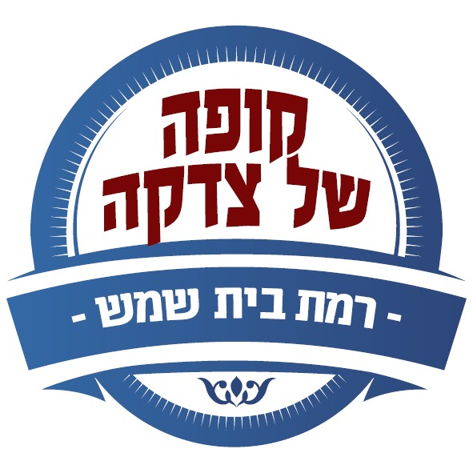

במשך למעלה מדור, תושבי רמת בית שמש יודעים שיש להם כתובת אמיתית בשעת מצוקה. קופה של צדקה מלווה משפחות ואנשים המתמודדים עם משבר כלכלי, ומעניקה להם תמיכה מקצועית, אנושית ומכובדת — עד לחזרה ליציבות ולעצמאות.
אני רוצה לעזור עכשיומאחורי כל קושי כלכלי עומדת משפחה שלמה שמתמודדת עם לחץ, חוסר ודאגה יומיומית.
קופה של צדקה רמת בית שמש פועלת כבר למעלה מ־25 שנה למען משפחות המתמודדות עם משברים כלכליים. מאז הקמתה בשנת 1999, צמחה הקופה יחד עם העיר רמת בית שמש והפכה לאחד מארגוני החסד המקצועיים והמשמעותיים בישראל. לצד הצמיחה, שמרנו על העיקרון החשוב ביותר: להעניק לכל אדם יחס אישי, מכבד ומקצועי.
פגישת היכרות ראשונית להבנת המצב והצרכים המדויקים של הפונה.
בחינה מקצועית של הכנסות, הוצאות, חובות והשלכות המשבר על חיי היומיום.
התאמת תוכנית אישית הכוללת ייעוץ פיננסי, טיפול בחובות והפניה לגורמים מקצועיים רלוונטיים.
ליווי צמוד של נציג מתנדב מיומן לאורך כל תהליך השיקום, בשילוב מענקים כספיים וצרכים חיוניים.
לחץ לפרטים וסיפור מהשטח >>
לחץ לפרטים וסיפור מהשטח >>
לחץ לפרטים וסיפור מהשטח >>
לחץ לפרטים וסיפור מהשטח >>
לחץ לפרטים וסיפור מהשטח >>
לחץ לפרטים וסיפור מהשטח >>
Israel Food Basket - מערכת דיגיטלית מתקדמת המאפשרת תרומה ישירה של סלי מזון למשפחות נזקקות בשקיפות מלאה.
בקר באתר הפרויקטHeart to Cause - פלטפורמה לגיוס המונים עבור מקרים הומניטריים ורפואיים דחופים ברמת בית שמש.
בקר באתר הפרויקטבנק פאג"י (52), סניף 179
חשבון 409-516074
קופה של צדקה רמת בית שמש א' ע"ר
Israel Food Distribution, Inc
Tax ID#: 510531922
Zelle: israelfooddistribution@gmail.com